Inclusive Care
Designing for Every Soul
I believe that a truly great digital experience leaves no one behind. To me, accessibility isn't just a checklist—it’s a way of showing care and respect.

Welcome to Dan's Portfolio
 Available for Work
Available for Work
Crafting accessible User Experiences through logical design and thoughtful storytelling.
Inclusive Care
I believe that a truly great digital experience leaves no one behind. To me, accessibility isn't just a checklist—it’s a way of showing care and respect.
Human Connection
Technology should feel like a helping hand, not a hurdle. I strive to lead with empathy, listening deeply to the "why" behind user stories.
Thoughtful Clarity
I find joy in bringing order to complexity. My focus is to make sure the message is always clear and easy to find for everyone.
Gentle Iteration
Every piece of feedback is a gift. I focus on the small, thoughtful details—testing and polishing until a solution is genuinely helpful.
 Gemini
Gemini
I set aside assumptions to truly listen to the user's voice. Through interviews and deep research, I uncover the "why" behind the challenges they face.


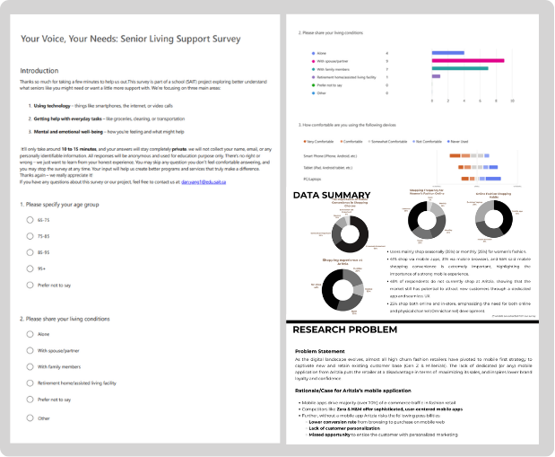
Finding order in chaos. I build information architectures and design user flows, prioritizing clarity and ease of use above all else.


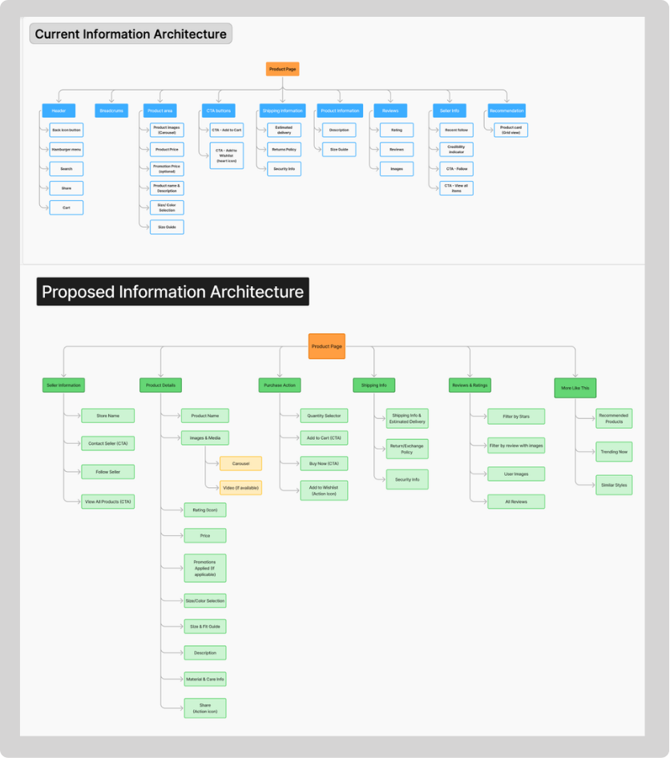
From wireframes to high-fidelity prototypes, I focus on creating accessible, clean, and delightful interfaces that resonate with every user.
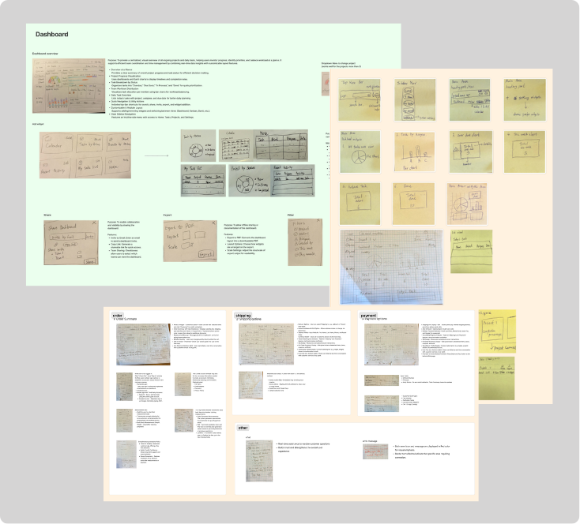


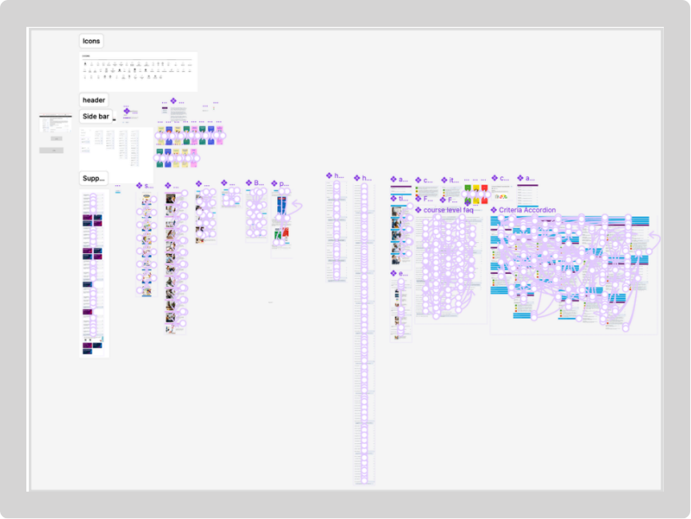
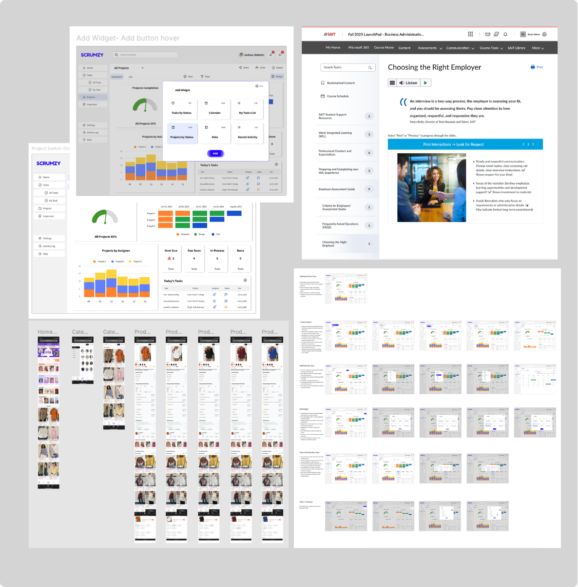
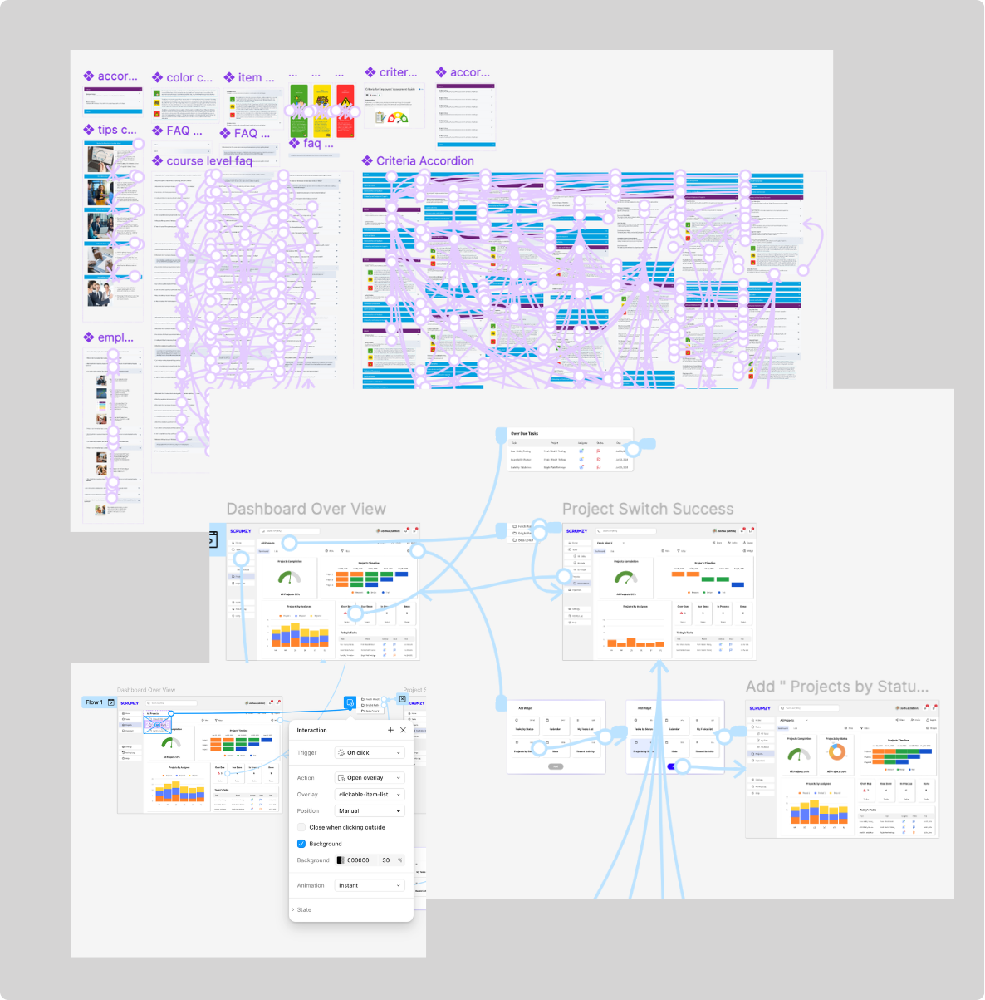
Every piece of real feedback is a gift. I identify friction points through tailored test plans and iterate with a gentle, meticulous touch.

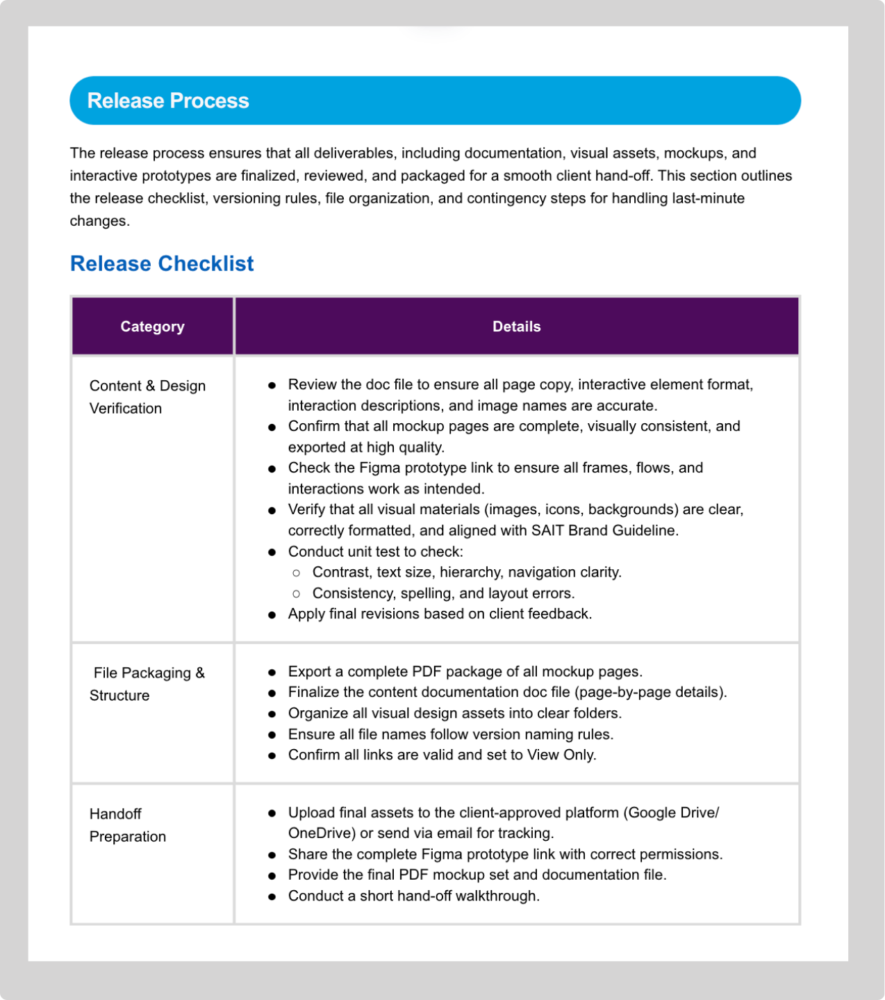
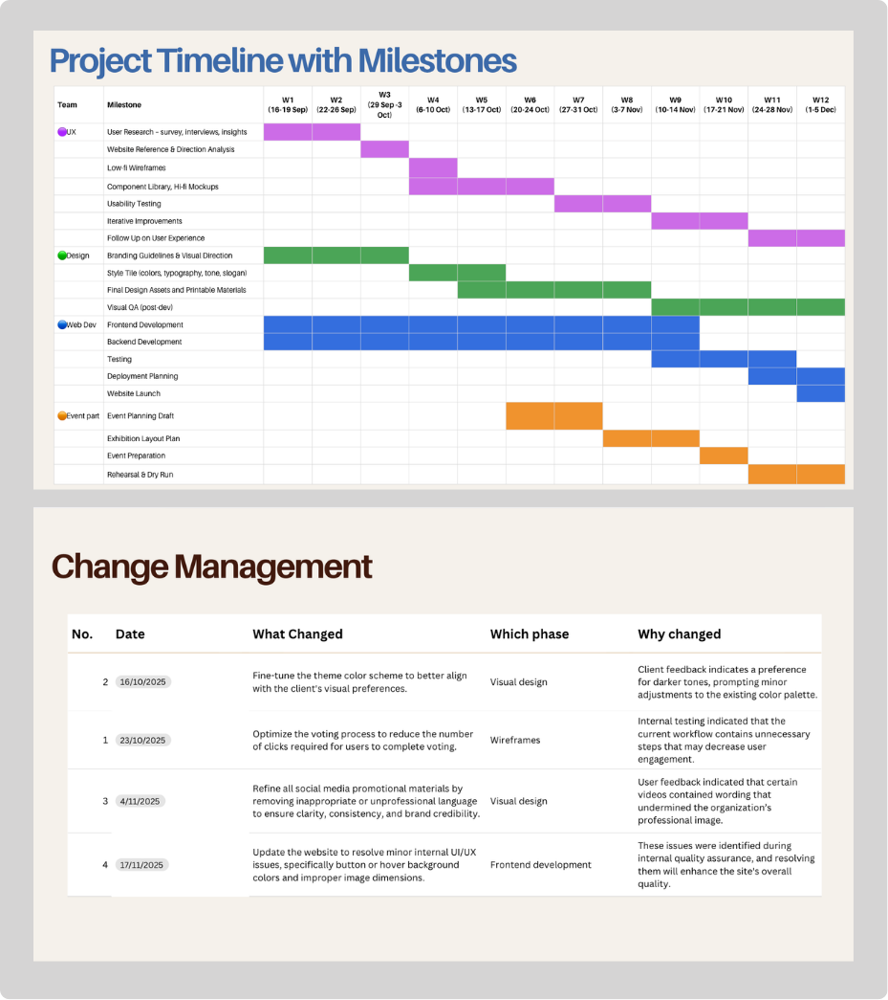
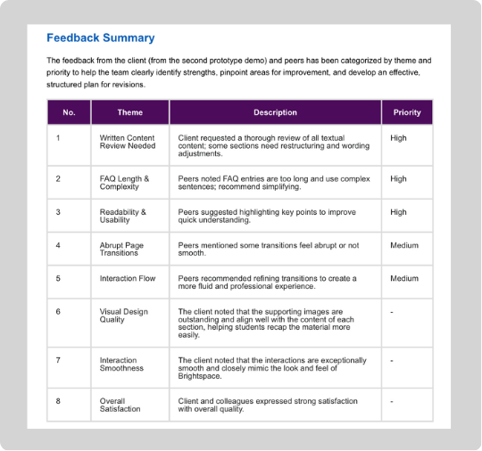
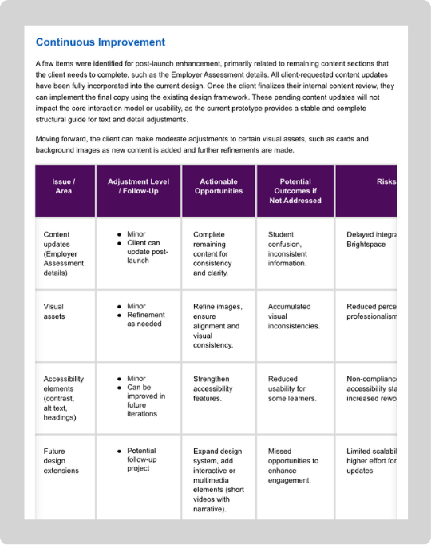

Transforming static PDF evaluation guides into interactive LMS resources for better navigation.

A wall-mounted assistance panel with large buttons and voice input for independent seniors.

A desktop project management tool designed to help teams organize tasks and track progress.

This redesign goal was to simplify the layout and improve the shopping experience to help users find information quickly.
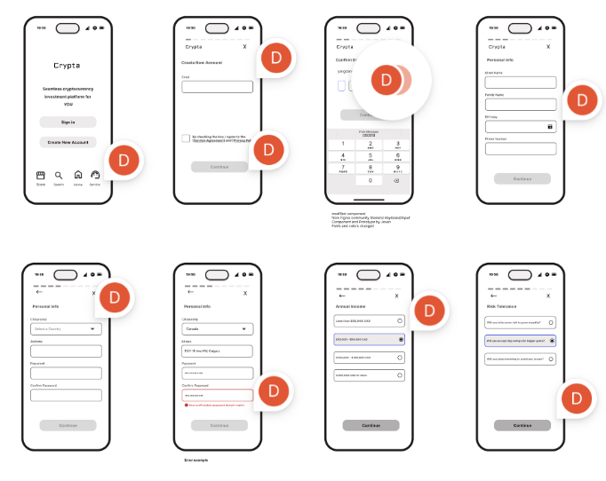
A sign-in flow design was focus on building trust, reducing friction, and making the login process secure and easy for new users.
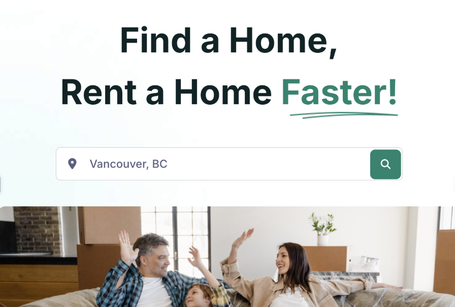
The redesign addressed issues in filtering, listing clarity, and communication between renters and landlords.
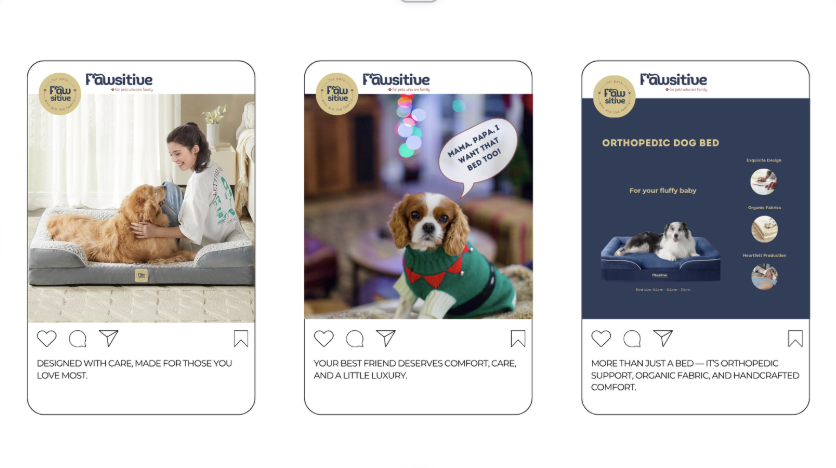
A branding project for a premium orthopedic pet bed brand. The project focused on building a lifestyle brand that emphasizes comfort, care, and quality for pets.

A digital advertising concept designed for high-traffic transit stations. The campaign used bold food photography and minimal layouts to quickly capture attention from commuters.
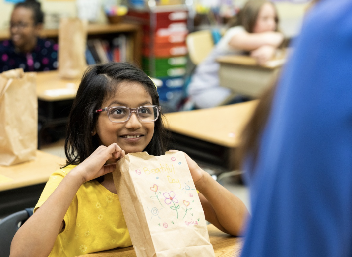
A marketing strategy designed to raise awareness of childhood hunger and encourage community donations. The campaign targeted younger audiences through TikTok content and impactful poster.
Available for work
Freelance, contract, and full-time roles welcome.